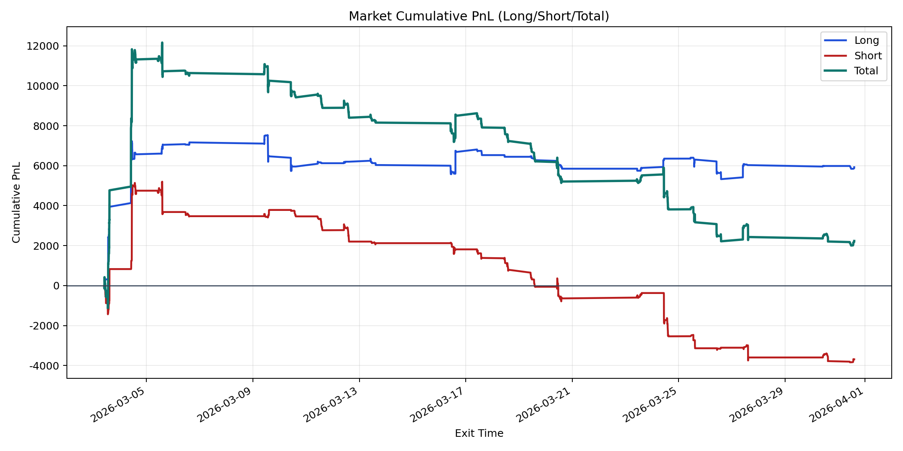
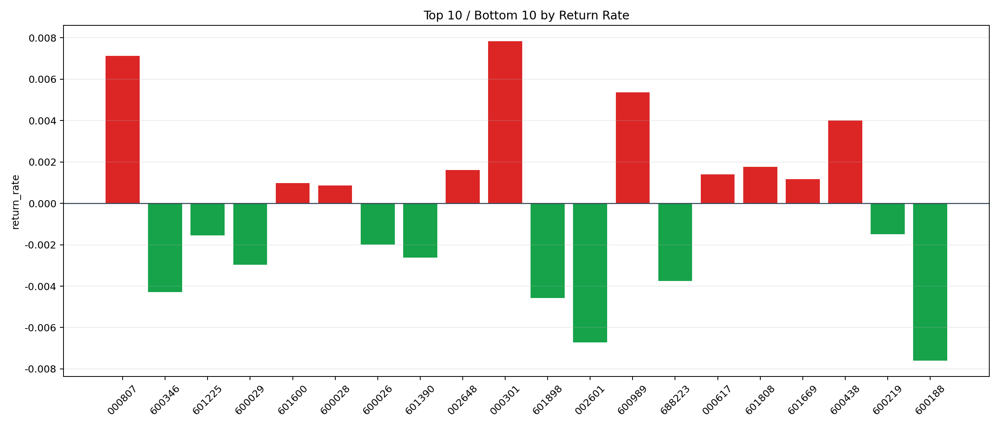

| repo_root | /home/haoranyou/data/output/alpha0.4_1w_5s_3ticks_index_filter/index_weights_300 |
|---|---|
| period_months | 1 |
| period_label | 2026-03-03_to_2026-03-31 |
| start_time | 2026-03-03 09:53:52 |
| end_time | 2026-03-31 14:17:47 |
| n_trades | 1506 |
| n_symbols | 36 |
| total_pnl | 2232.3300999999733 |
| long_total_pnl | 5924.226650000008 |
| short_total_pnl | -3691.896550000032 |
| total_entry_notional | 14219697.0 |
| long_entry_notional | 5015388.0 |
| short_entry_notional | 9204309.0 |
| total_return_rate | 0.00015698858421525952 |
| long_return_rate | 0.0011812100379870925 |
| short_return_rate | -0.00040110523777504994 |
| top_symbols_by_return | ["000301", "000807", "600989", "600438", "601808", "002648", "000617", "601669", "601600", "600028"] |
| bottom_symbols_by_return | ["600188", "002601", "601898", "600346", "688223", "600029", "601390", "600026", "601225", "600219"] |

